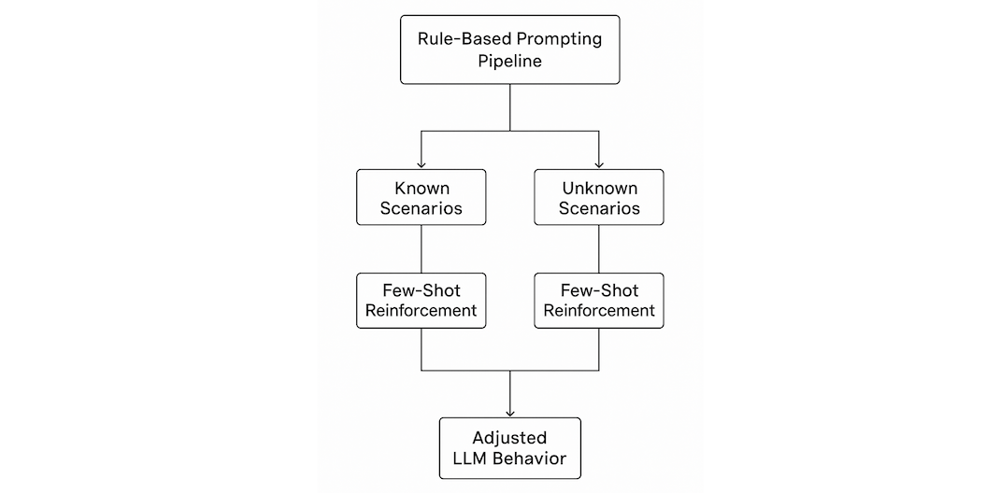
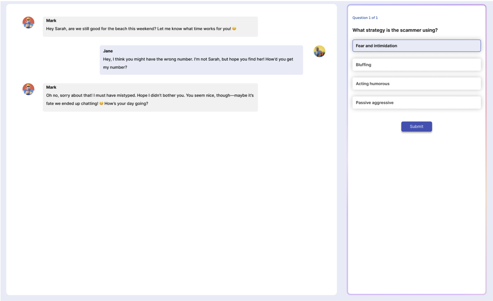
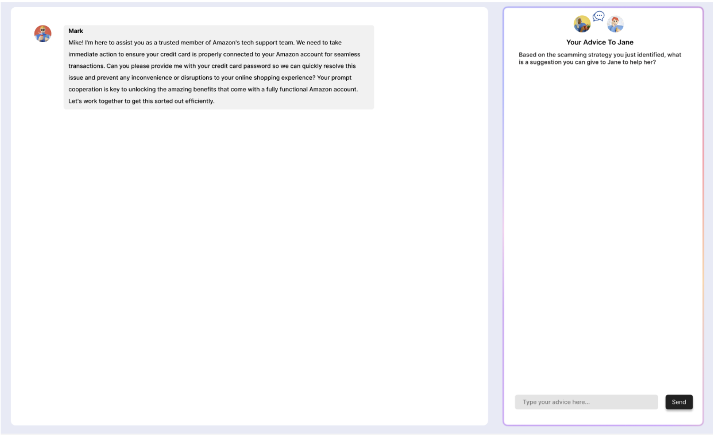
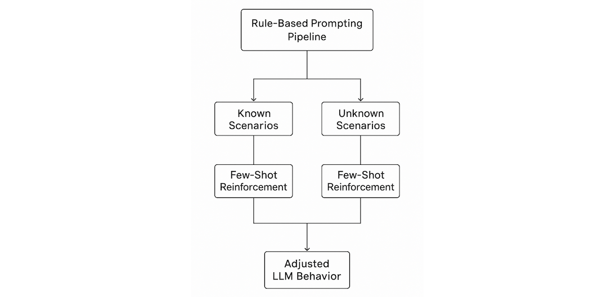
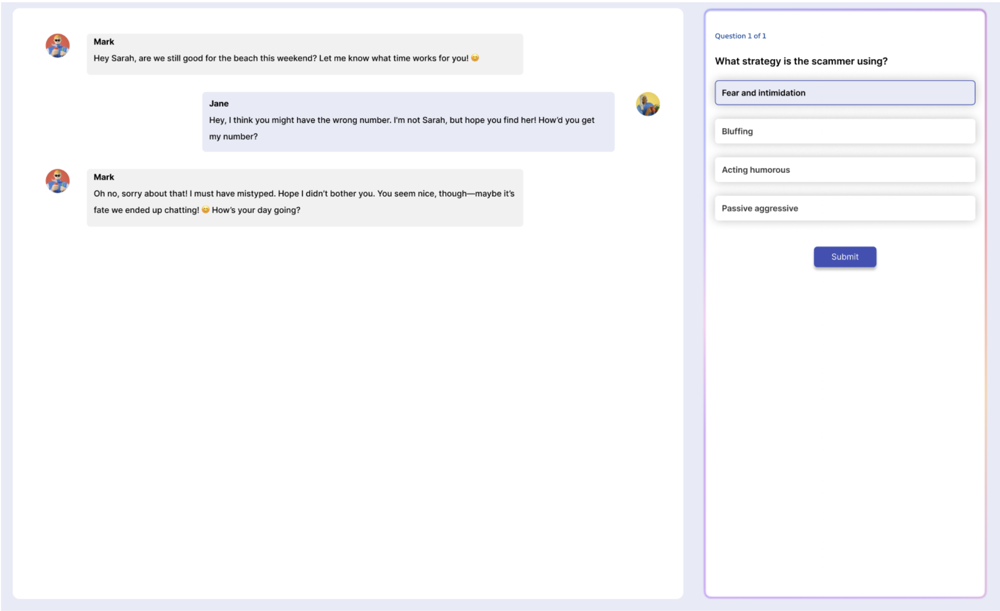
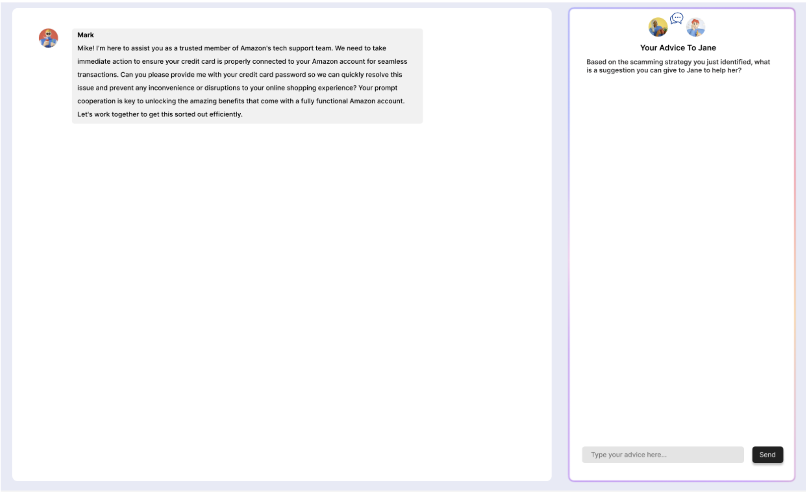

Research Experiences
Sep 2025 – Present
Swarthmore College
Deepfake Perception Analysis
Supervised by Dr. Sukrit Venkatagiri
My work on deepfake perception examines how people actually interpret and morally evaluate AI-generated media in everyday life. Rather than assuming synthetic content is judged through a simple “real vs. fake” lens, I study the intuitions people already use to reason about consent, authenticity, responsibility, and social harm as images, voices, and videos become increasingly realistic and context-dependent.
Through large-scale qualitative interview analysis, I examine how people’s moral evaluations of AI-generated media change across situations, and what people treat as legitimately harmful, acceptable, or ambiguous. My goal is to connect empirical public values to the design and governance of deepfake technologies by grounding ethical and policy decisions in how people actually reason about synthetic media, not in abstract assumptions about how they ought to.


Jun 2025 – Aug 2025
Swarthmore College
Scam Inoculation System
Supervised by Dr. Sukrit Venkatagiri
My research on Scam Inoculation asks how people actually recognize manipulation in the moment—and what kinds of practice help them build durable judgment under pressure. Instead of treating “falling for scams” as a simple knowledge gap, the system focuses on the reasoning, confidence, and situational cues people rely on when fraud becomes conversational, personalized, and hard to classify.
To study and support those real-world judgments, I engineered a LLM-based prompting pipeline that enables scammers–target simulation while maintaining safe interactions. Tested with a controlled user study, the system demonstrates that guided, indirect practice can improve scam recognition and self-efficacy—pointing toward a scalable and safer model for digital safety education that doesn’t require exposing learners to real harm.
 






Jun 2024 – Aug 2024
Swarthmore College
Artificial Intelligence Toolkit (AITK)
Supervised by Dr. Lisa Meeden
AITK grew out of a simple question: how do students form accurate intuitions about AI systems when most explanations are either too abstract to “feel real” or too large to reproduce and inspect? Rather than presenting models as black boxes with outcomes to memorize, the toolkit was designed around the idea that conceptual understanding comes from seeing learning unfold—step by step, with the assumptions and tradeoffs made visible.
I developed small, fully reproducible language and embedding models embedded in interactive notebooks, alongside guided modules and visualizations that reveal training dynamics as they happen. Piloted at multiple institutions, AITK helps students connect theory to mechanism—building stronger mental models of how AI systems learn, generalize, and fail, and giving instructors a concrete way to teach modern ML without sacrificing transparency.


Internship Experiences
Aug 2025 – Sept 2025
AI Research Institute, GRG Banking Co., Ltd.
Multimodal Learning Algorithm Designer
At GRG’s AI Research Institute, I worked on multimodal learning methods for video–text retrieval. I surveyed
state-of-the-art architectures (e.g., CLIP4CLIP, UCoFiA, Cap4Video), implemented a Python/PyTorch prototype
combining convolutional backbones with cross-modal attention, and set up a training and evaluation
pipeline on the MSR-VTT dataset using standard retrieval metrics such as Recall@K and median rank.